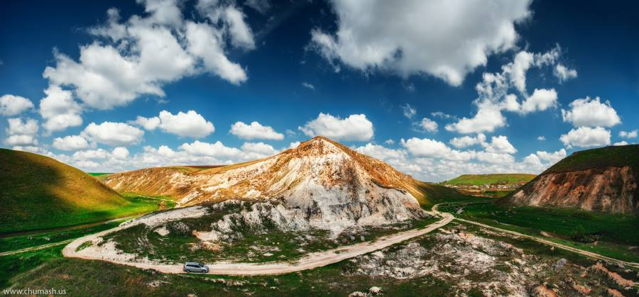

Geografie :

Republica Moldova e situată în partea centrală a Europei, în nord-estul Balcanilor, pe un teritoriu de 33843,5 km2.
Capitala – oraşul Chișinău. La nord, est şi sud este înconjurată de Ucraina, iar la
vest – separată de România de râul Prut.
Lungimea totală a hotarului naţional constituie 1906 km, inclusiv 1222 km – cu Ucraina, 684 km – cu România. Cel mai de nord punct al ţării este satul Naslavcea (480 21' N 270 35' E), iar cel mai sudic – Giurgiuleşti (450 28' N 280 12' E), care e şi unica localitate pe malul Dunării. Punctul cel mai de vest este satul Criva (48 0 16' N 26 0 30' E), cel mai de est – satul Palanca (460 25' N 300 05'E).
Republica Moldova face parte din grupul ţărilor bazinului Mării Negre. Cu acestea, precum şi cu statele dunărene, întreţine strânse legături comerciale reciproc avantajoase. Hotarul ei de sud se întinde până aproape de Marea Neagră, ieşirea la mare deschizându-se prin limanul Nistrului şi fluviul Dunărea.
Poziţia fizico-geografică a Republicii Moldova a determinat variatele particularităţi ale condiţiilor ei naturale.
Relieful ţării reprezintă o câmpie deluroasă, înclinată de la nord-vest spre sud-est cu altitudinea medie de circa 147 m deasupra
nivelului mării. În partea centrală a ei se află Codrii, regiunea cea mai ridicată, cu altitudinea maximă de 429,5 m (dealul Bălăneşti, raionul Nisporeni) şi puternic fragmentată de văi şi vîlcele. Procesele erozionale şi alunecările de teren
au condiţionat formarea hîrtoapelor, care prezintă nişte amfiteatre în spaţiul cărora sînt situate localităţi rurale. Pitorescul peisaj al codrilor, care e foarte asemănător cu o regiune premontană, a fost numit de către geomorfologul şi pedologul
rus Vasili Dokuceaev “Elveţia basarabeană”. Sud-vestul ţării şi teritoriul de pe cursul inferior al Nistrului au relief de cîmpie mai puţin fragmentată.
Resursele minerale ale Republicii Moldova sânt reprezentate preponderent de roci sedimentare, cum ar fi calcarul, creta, ghipsul, nisipul, gresia, bentonita, tripoli şi diatomita, care pot fi folosite la construcţii, la producerea cimentului şi a sticlei, în industriile alimentară, chimică, metalurgică etc. Pe teritoriul Republicii Moldova au fost identificate minerale nemetalice ca grafitele, fosforitele, zeolitele, fluoritele, baritele, iodurile şi bromurile, precum şi unele metale industriale ca fierul, plumbul, zincul şi cuprul. Moldova posedă şi depozite mici de lignite, petrol şi gaz natural.
Clima Republicii Moldova este temperat continentală, caracterizîndu-se prin lungi perioade fără îngheţ, ierni scurte şi blînde, veri lungi şi călduroase, precipitaţii modeste şi lungi perioade secetoase la sud. Temperatura medie anuală creşte de la 8-9 oC la nord pînă la 10-11 oC la sud. Precipitaţiile medii anuale variază între 600-650 mm la nord şi centru şi 500-550 mm la sud şi sud-est.
Reţeaua hidrografică include peste 3000 de rîuri şi rîuleţe, dintre care 10 au lungimea de peste 100 km. Principalele rîuri sînt Nistru (1352 km, pe teritoriul ţării – 657 km), Prut (976 km, pe teritoriul ţării – 695 km), Răut (286 km), Cogîlnic (243 km, pe teritoriul ţării – 125 km), Bîc (155 km), Botna (152 km). Pe teritoriul Moldovei se mai află 60 de lacuri naturale şi circa 3000 lacuri de acumulare. Cele mai mari sînt Beleu, Dracele, Rotunda, Fontan, Bîc şi Roşu, fiecare avînd suprafaţa oglinzii de apă peste 1 km2. Cele mai mari lacuri de acumulare din ţară, fiecare cu o capacitate acvatică de peste 30 milioane m3, sînt cele de la Costeşti-Stînca, Dubăsari, Cuciurgan, Taraclia şi Ghidighici.
În Moldova se mai află peste 2200 de izvoare cu apă naturală. Circa 20 depozite de ape minerale cu peste 200 izvoare de apă au fost identificate şi explorate. Cele mai valoroase se consideră apele minerale care conţin componenţi curativi ca sulfurile, iodurile, bromurile, borul şi radonul. Cît priveşte valoarea lor terapeutică, apele minerale ale Moldovei sînt analoage cu bine cunoscutele în toată lumea Karlovî Varî din Cehia, Borjomi din Georgia şi Essentuki-17 din regiunea Caucazului de Nord a Federaţiei Ruse.
Învelişul de sol al Moldovei este mănos şi variat, fiind constituit din peste 745 de varietăţi de soluri. Cernoziomurile alcătuiesc circa 75% din suprafaţa teritoriului ţării. Solurile brune şi cenuşii de pădure ocupă 11%, iar cele aluviale, adeseori salinizate şi înmlăştinite – 12%.
Flora Republicii Moldova, variată şi bogată, cuprinde peste 5,5 mii specii de plante sălbatice. Diversitatea botanică a ţării este condiţionată de poziţia geografică, de caracteristicile sale topografice şi de climă. La nivel de landşaft, teritoriul ei este situat în trei zone naturale: pădure, silvo-stepă şi stepă. Pădurile ocupă circa 11% din teritoriul Moldovei. Predomină pădurile de foioase, specifice Europei Centrale. Cele mai întinse masive forestiere sînt situate în centrul ţării, fiind reprezentate prin rezervaţiile “Codrii” şi “Plaiul Fagului”. Ecosistemele forestiere ale ţării conţin 45 specii băştinaşe de copaci, 81 specii băştinaşe de arbuşti şi 3 specii native de liane arboricole. Printre cele mai răspândite specii native de plante lemnoase care se întîlnesc în pădurile noastre sînt stejarul comun (Quercus robur), gorunul (Quercus petraea), stejarul pufos (Quercus pubescens), frasinul European (Fraxinus excelsior), carpenul european (Carpinus betulus), ulmul comun (Ulmus laevis), arţarul sicomor (Acer pseudoplatanus), teiul comun (Tilia cordata), mesteacănul european (Betula pendula) şi fagul european(Fagus sylvatica).
Fauna Republicii Moldova este relativ bogată şi variată. În ţară vieţuiesc peste 15,5 mii specii de animale, inclusiv 461 specii de vertebrate şi peste 15.000 specii de nevertebrate. Dintre vertebrate se întîlnesc 70 specii de mamifere, 281 specii de păsări, 14 specii de reptile, 14 specii de amfibieni şi 82 specii de peşti. Cele mai răspîndite specii native de mamifere sînt liliacul urecheat (Plecotus auritus), ariciul comun (Erinaceus europaeus), cîrtiţa europeană (Talpa europaea), chiţcanul comun (Sorex araneus), nictalul (Nyctalus noctula), veveriţa comună (Sciurus vulgaris), iepurele comun (Lepus europaeus), ţistarul european (Citellus citellus), ţistarul pătat (Citellus suslicus), şoarecele domestic (Mus musculus), şobolanul sur (Rattus norvegicus), şoarecele de pădure (Apodemus sylvaticus), şoarecele de cîmp (Apodemus flavicollis), vulpea comună (Vulpes vulpes), căprioara (Capreolus capreolus), mistreţul (Sus scrofa), bursucul (Meles meles), jderul de piatră (Martes foina), dihorele european (Mustela putorius) şi nevăstuica (Mustela nivalis).
În Republica Moldova există cinci rezervaţii ştiinţifice cu suprafaţa totală de 19,4 mii ha. Două rezervaţii forestiere – “Codrii” şi “Plaiul Fagului” – se află în centrul Moldovei; altele două – “Prutul de Jos” şi “Pădurea Domnească” – sînt amplasate în valea rîului Prut; a cincea rezervaţie – “Iagorlîc” din raionul Dubăsari – are ca scop protecţia şi studierea ecosistemului acvatic unic al rîului Nistru.
Natura pictează pentru noi, zi după zi, imagini de o infinită frumusețe.
- John Ruskin